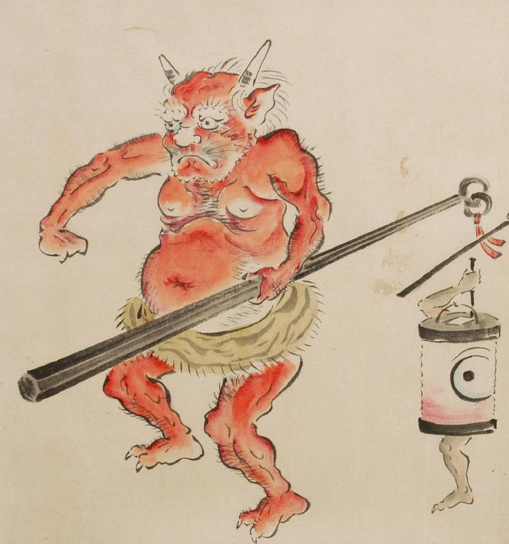

虎皮の腰巻をはき、左手で金棒を持った鬼。角が2本生え、耳が尖っている。眉毛は逆立ち、頬と顎にひげを生やしている。肌は赤く、全身に毛が生えている。
出典：親書誌：U426_nichibunken_0053：化物婚礼絵巻；バケモノコンレイエマキ／日付：2006／資源識別子：U426_nichibunken_0053_0015_0005
Copyright (c)2010- International Research Center for Japanese Studies, Kyoto, Japan. All rights reserved.